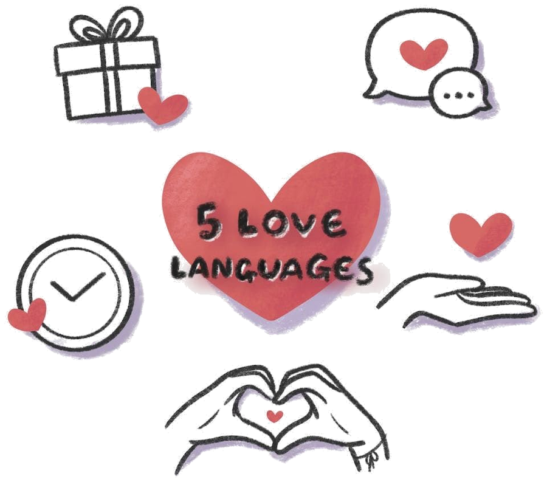
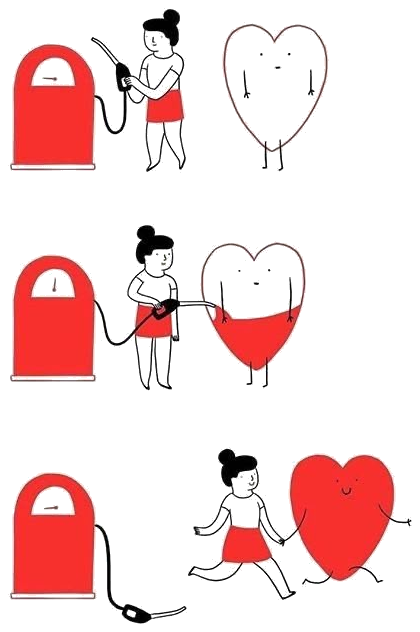

מסע קצר לשניים. חמש תחנות, ושאלה אחת שעוברת דרך כולן: מה בדיוק צריך לקרות כדי שכל אחד מכם ירגיש אהוב.

זה לא מה שחסר כאן. אני מלווה זוגות שמונה שנים, ובמעל אלף נשים וזוגות כמעט אף פעם לא פגשתי זוג שהבעיה שלו היא שאין אהבה.
הבעיה היא אחרת. אחד נותן בכל הכוח, והשני לא מרגיש את זה בכלל. ואז אחד מרגיש כפוי טובה, והשני מרגיש שקוף, ושניהם עייפים.
זה שאנחנו אוהבים לא בהכרח אומר שהשני מרגיש אהוב.
גארי צ׳פמן כתב שכל אחד מאיתנו נכנס לקשר עם דלי אהבה שצריך להתמלא. ושהדלי הזה לא מתמלא מכל דבר. הוא מתמלא מדבר אחד מסוים, שונה אצל כל אחד מאיתנו.
יש מי שהדלי שלו מתמלא ממילים. יש מי שממגע. יש מי שרק מזמן אמיתי בלי טלפון, ויש מי שכל מה שהוא צריך זה שמישהו ייקח ממנו משהו מהידיים.

א׳ מנקה את כל הבית כדי להראות אהבה. ל׳ מרגישה בודדה, כי מה שהיא צריכה זה שהוא פשוט יישב לדבר איתה.
היא כועסת שהוא בורח לעבודות. הוא כועס שהיא לא מעריכה את ההשקעה. שניהם נדיבים. הם פשוט לא מחוברים לאותו צינור, ושניהם נשארים עם דלי ריק.
כל מה שתמלאו נשמר אצלכם במכשיר בלבד. שום דבר לא נשלח לשום מקום, ואף אחד אחר לא רואה את זה.
זה לא שאלון שכל אחד ממלא לבד ואז משווים תוצאות. רוב העבודה קורית בדיוק ברגעים שבהם אתם קוראים מה השני כתב, ומגלים שלא ידעתם.
ואם בן או בת הזוג לא שם כרגע — בתחילת כל תחנה יש מצב של מילוי לבד. הוא לא מתחזה למשותף: התמונות שנבנות משתי התשובות פשוט יחכו, ובמקומות שבהם אתם משערים מה השני צריך, זה ייכתב במפורש כהשערה.
בין עשר לעשרים דקות לתחנה, לפי אורכה. אפשר לעצור באמצע ולחזור, הכול נשמר. התחנה השלישית היא הארוכה מכולן, והיא גם זו ששווה הכי הרבה, אז אל תעשו אותה בעייפות.
חמש תחנות בערך שעה ורבע, ועוד שתיים שמחכות לשבועות שאחרי. לא חייבים ברצף — הכול נשמר.